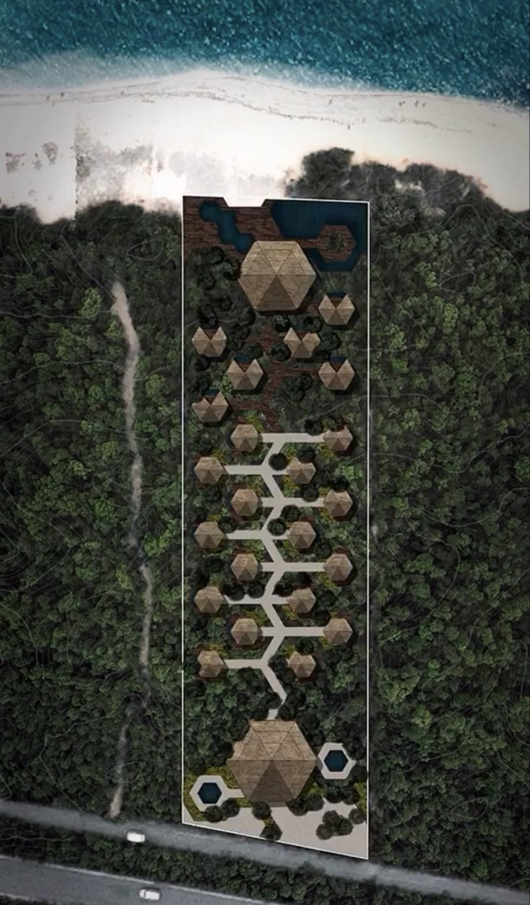

Quanto custa abrir a porta, quanto sobra, os três cenários e o tempo de volta do dinheiro.
2
Por quê
Descobrir numa tarde, e não numa obra, é o melhor momento para descobrir.
3
Resultado
A página 6 do seu Dossiê: a conta inteira, com origem e com veredito.
Revisite · sem voltar às páginas
Três perguntas dos Pilares 4 e 5
Qual é a receita bruta da Marina no cenário que ela mediu?
Clique para virar
Resposta
Cerca de R$ 272 mil no ano.
Receita bruta é lucro?
Clique para virar
Resposta
Não. Ainda saem impostos, comissões e os custos da operação.
O que entra na coluna "Entra" do escopo congelado?
Clique para virar
Resposta
Exatamente o que vai ser orçado neste pilar.
Bloco 1
Quanto custa o projeto inteiro
CuriosidadeNa referência da Zion, um terço do custo de uma unidade pronta fica fora do preço da unidade.
ReflexãoSe eu te pedir agora o custo da sua fase um, de onde vem o número que você vai dizer?
DicaEscreva o seu palpite hoje, com data. No fim, compare com a conta inteira.
A cena que se repete
O preço chegou pelo WhatsApp
"Fica em tanto a unidade."
À noite, a calculadora: vezes as unidades. Alívio.
Logo depois, um frio na barriga: será que é só isso?
Antes da resposta · o que você acha?
O preço da unidade costuma incluir...
Ele cobre a unidade. Deck, ligações, piso, mobília, enxoval, licenças, reserva e capital de giro ficam com você.
Exemplo ilustrativo · base de referência da Zion
O primeiro esquecimento
A unidade sozinha, bolha ou cabana · 3 × R$ 129.000R$ 387.000
A unidade pronta, com deck, luz, água, piso e mobília · 3 × R$ 192.346R$ 577.038
O que ficaria de foraR$ 190.038 · 32,9%
Um terço do custo das unidades prontas, antes de qualquer licença ou reserva. Valores orientativos, não orçamento.
Os cinco erros do orçamento amador
Clique em cada um: o que acontece?
Orçar só as unidades
Virar
Acontece
Deck, ligações, áreas comuns e infraestrutura aparecem na obra.
Usar o preço de outra região, ou de outro ano
Virar
Acontece
O preço não é o seu.
Esquecer os suprimentos da operação
Virar
Acontece
Enxoval, utensílios e limpeza chegam na semana da abertura.
Tratar a reserva como opcional
Virar
Acontece
Otimismo não paga aditivo, o acréscimo cobrado no meio da obra.
Esquecer o caixa dos primeiros meses
Virar
Acontece
Obra pronta não é negócio funcionando.
A raiz dos cinco é uma só: o orçamento parou onde o primeiro preço parou.
Troque a pergunta
Não é quanto custa a cabana. É quanto custa abrir a porta.
O investimento é tudo o que precisa existir até o primeiro hóspede, com a origem de cada número escrita ao lado. O nome técnico é CAPEX.
A folha de oito linhas
Seis por unidade, duas do projeto
A unidade, bolha ou cabana
O deck de madeira
A luz
A água e o esgoto, ou a fossa
Mobiliário, equipamentos e enxoval, com três jogos por cama
O piso interno
As licenças e os projetos
A reserva do imprevisto, de 10%
E duas linhas ficam à parte
O giro entra. O terreno fica fora, mas não é de graça.
Capital de giro
Entra na conta?
Clique para o porquê
Por quê
Entra. É o dinheiro que paga os primeiros meses, enquanto a receita ainda não cobre o custo. Tem que estar no banco no dia da abertura.
O terreno
Entra na conta?
Clique para o porquê
Por quê
Fica fora, mesmo que já seja seu. Mas é dinheiro preso no projeto: fora da conta não quer dizer de graça.
A origem de cada número
Só existem três respostas
1
Faixa de referência
Um ponto de partida, como a referência da Zion. Não fecha o número.
2
Cotação escrita
Com escopo e data. É a que fecha.
3
Em branco
E a quem perguntar, anotado ao lado.
Uma linha em branco vale mais do que um número inventado.
Ao vivo · equalize a folha
Exemplo ilustrativo · valores orientativos
Quanto custa abrir a porta
Unidades prontas
Licenças e projetos
Reserva do imprevisto
Capital de giro
Investimento da fase
Por unidade aberta
Fora da conta: o terreno e a infraestrutura comum, por cotação.
Ajustado ao vivo
A linha que mais varia
A infraestrutura comum
Acesso, caminhos, estacionamento, apoio e a rede preparada para a fase dois.
Se orça pela distância e pela capacidade, com cotação.
A primeira ligação é para a concessionária de energia, e é gratuita.
Licenças: o que vale no seu terreno, quem confirma é a prefeitura, o arquiteto e, se houver dúvida, o advogado.

E se a conta passar do que você pode?
Corte metros no projeto, antes da obra. Nunca corte a experiência dentro deles.
Na Marina, a banheira no deck e a lareira movem a diária. Ficam.
Quiz relâmpago · 1 de 2
O que é CAPEX?
Tudo até o primeiro hóspede. O custo de cada mês é o OPEX.
Quiz relâmpago · 2 de 2
Como se orça a infraestrutura comum?
Quantos metros até a unidade mais distante, e para quantas unidades cada sistema é dimensionado.
Antes do bloco 2 · 5 minutos
A sua folha de oito linhas
1Escreva as oito linhas, com valor ou em branco.
2Ao lado de cada uma, a origem: referência, cotação ou em branco.
3Escreva as duas linhas à parte: o giro e o terreno.
4Anote a primeira ligação: a concessionária.
5:00
Compare com o palpite que você escreveu no começo.
Bloco 2
A conta, os três cenários e o tempo de volta
CuriosidadeProjeto quebra por falta de caixa num mês, não por prejuízo no ano.
ReflexãoSe o seu cenário mais fraco acontecer, a conta ainda paga as contas?
DicaEscolha o mês de abertura no começo da alta. Não custa nada.
Exemplo ilustrativo · Pilar 4
Receita bruta não é lucro
Noites possíveis · 3 cabanas × 3651.095
Noites vendidas · 1.095 × 38,5%421,6
× diária média de R$ 645R$ 271.916
Receita bruta no anocerca de R$ 272 mil
Dessa receita ainda saem impostos e comissões, custos variáveis e custos fixos.
O que sai da receita
Três grupos de custo. Clique em cada um.
Impostos e comissões
Exemplos
O que é
Os impostos sobre a receita e as comissões das plataformas. A alíquota, quem confirma é o contador.
Custos variáveis
Exemplos
O que é
O que só sai porque alguém dormiu: limpeza, lavanderia, a cesta do café.
Custos fixos
Exemplos
O que é
O que sai com a casa cheia ou vazia: a pessoa local, a manutenção e o seu próprio trabalho.
Na primeira conta, a simplificação de referência da Zion: de cada R$ 100 que o hóspede paga...
R$ 60 · custos, impostos e comissões
R$ 40 · resultado
Ao vivo · equalize a operação
Exemplo ilustrativo · não é promessa
Faturou bem, então sobrou?
Receita bruta no ano
Custos, impostos e comissões
Resultado operacional no ano
Por mês, em média
Antes de qualquer parcela de financiamento e de impostos sobre o lucro.
Ajustado ao vivo
O primeiro ano tem rampa
Ninguém abre na ocupação do destino
Clique em cada fase para ver o que acontece e por quê.
A rampa se cruza com o calendário, mês a mês, nunca com a média do ano. Fonte: Jornada do COMO, Etapa 02.
Exemplo ilustrativo · resolvido passo a passo
O giro da Marina
O custo do ano, no conservador · 60% × R$ 271.916R$ 163.150
Um mês de custo, em média · ÷ 12R$ 13.596
Três meses, no banco no dia da aberturacerca de R$ 41 mil
Projeto quebra por falta de caixa num mês. E esse mês dá para saber qual é.
Ao vivo · os três cenários
Exemplo ilustrativo · não é promessa
Não interessa o melhor caso. Interessa onde ele para.
Ajustado ao vivo
Conservador
ReceitaResultado no anoTempo de voltaO que precisa funcionar
Base
ReceitaResultado no anoTempo de volta
Otimista
ReceitaResultado no anoTempo de voltaTeto, não meta
O tempo de volta em linguagem de padaria
Você põe um milhão numa padaria
InvestimentoR$ 1.000.000
O que sobra por ano, depois de pagar tudoR$ 100.000
Tempo para o milhão voltar10 anos
O mercado chama de payback. Nós chamamos de tempo de volta: o investimento dividido pelo que a operação deixa por ano.
Ao vivo · a escada
Exemplo ilustrativo
O ano em que a escada passa do zero
Investimento Resultado por ano Tempo de volta Ajustado ao vivo
Como ler · hospedagem pequena com operação própria
A régua do tempo de volta
Até 5 · muito bom, e raro
5 a 8 · bom
8 a 12 · com valorização
Acima de 12 · razão escrita
Acima de 12 anos quer dizer que o projeto é proibido?
A régua não proíbe; exige. Patrimônio, uso da família ou projeto de vida, escritos no Dossiê antes de pedir dinheiro. Fonte da régua: Jornada do COMO, Etapa 02.
Ao vivo · a conta inteira em uma tela
Exemplo ilustrativo · valores orientativos
Ajustado ao vivo
Investimento da fase, com o giro
Resultado operacional no ano
Tempo de volta
até 5
5 a 8
8 a 12
12+
Com o terreno somado
Limite do investimento dentro de 8 anos
Diária mínima para ficar em 8 anos
A premissa que mais dói
Na vida real, o que dói mais: a diária 10% menor ou a ocupação 10% menor?
Na margem de referência as duas pesam igual: o tempo de volta do conservador vai de 6,35 para 7,05 anos. Na vida real, a diária menor dói mais. A hierarquia da dor: diária, ocupação, custo fixo, investimento. O que protege a diária é o produto do Pilar 3 e a reputação.
Exemplo ilustrativo · conservador
O que precisa ser verdade para ficar em 8 anos
O que muda
Até onde aguenta
A conta
O investimento total
Até cerca de R$ 870 mil
8 × 108.766 = 870.131
A receita no ano
Até cerca de 20% abaixo
690.529 ÷ 8 ÷ 0,40 = 215.790
A diária, com 38,5%
Até cerca de R$ 512
215.790 ÷ 421,6 noites
A ocupação, com R$ 645
Até cerca de 30,5%
215.790 ÷ (1.095 × 645)
Uma conta que fecha com folga declarada é uma conta que se defende.
Exemplo ilustrativo · resolvido passo a passo
A pergunta dos 27%, respondida
O peso do terreno: 600 mil ÷ (600 mil + 690,5 mil)46,5%
Sem o terreno, no conservador6,35 anos
Com o terreno somado11,87 anos
O terreno é patrimônio da família e fica fora do tempo de volta. Eu aceito esse peso e escrevo isso antes de pedir dinheiro.
Então a conta da Marina fecha?
No cenário mais fraco, dentro da régua
Veredito: avança com a fase um, de três cabanas.
Antes de assinar, troca cada linha por cotação escrita e soma a infraestrutura comum.
Critério para voltar à conta: investimento acima de cerca de R$ 870 mil, ou receita uns 20% abaixo do conservador.
Primeiro prove a conta, depois escolha como crescer
Os três caminhos para crescer
Clique em cada caminho: o que pede e por que nessa ordem.
Quiz relâmpago
A conta da Marina fecha no conservador. Ela já constrói a quarta e a quinta cabanas?
As cabanas 4 e 5 esperam o gatilho: reservas reais, caixa (cerca de R$ 423 mil pela mesma referência, com reserva) e maturidade. Crescer em cima de uma conta ainda não provada é multiplicar o risco.
Revisão · responda de cabeça
Qual cenário precisa funcionar?
Se o conservador não paga as contas, o projeto ainda não está pronto. O otimista é teto, não meta.
Revisão · responda de cabeça
A rampa do primeiro ano se aplica sobre...
Sobre a média, ela esconde o pior: o primeiro vale caindo na metade da rampa.
Faça agora · a página 6 do seu Dossiê
A sua Pré-viabilidade
1Responda. Uma pergunta por tela: as oito linhas, o giro e o terreno, a receita e a margem. Onde não souber, "não sei" vira tarefa da semana.
2Equalize no simulador. Os três cenários, o tempo de volta e os seus limites.
3Baixe o seu PDF e guarde na pasta "Meu Dossiê".
10:00
Na área de membros: aula "Faça agora · A sua Pré-viabilidade"
O Pilar 6 em uma tela
O que ficou
Não é quanto custa a cabana: é quanto custa abrir a porta, em oito linhas, cada uma com origem.
O giro entra na conta. O terreno fica fora, mas não é de graça.
Receita bruta não é lucro. A margem de 40% é simplificação, não promessa.
O primeiro ano tem rampa: o giro existe para isso.
Tempo de volta se lê numa escada. O conservador precisa funcionar.
Primeiro prove a conta, depois escolha como crescer.
Próximo · Pilar 7
Capital e Dossiê
De onde vem o capital, com quem, e a decisão de avançar, ajustar ou parar. Um projeto assim é o que um sócio, um banco ou a Zion conseguem avaliar. E a Zion avalia cada caso.
Conteúdo educacional. A Marina é um exemplo ilustrativo e as contas são ilustrativas, na base de referência da Zion. Não é orçamento nem oferta de investimento, e não é promessa de renda, lucro, retorno, prazo de retorno, ocupação, crédito ou sociedade.